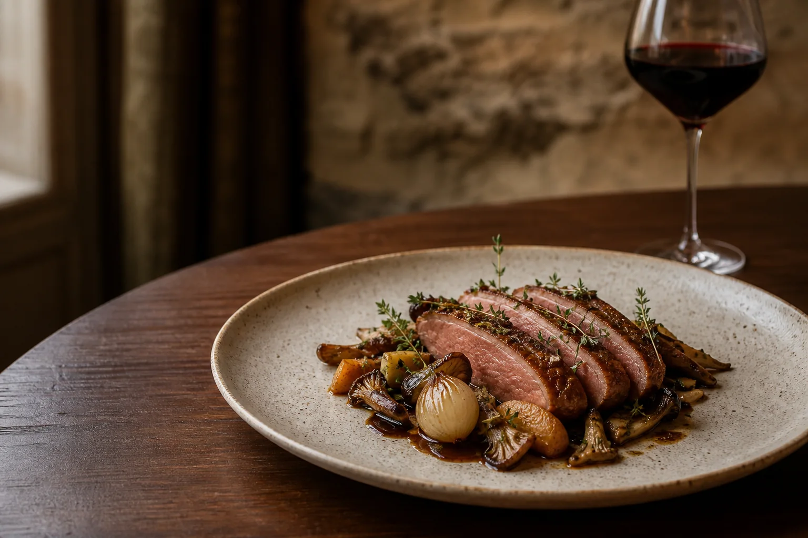
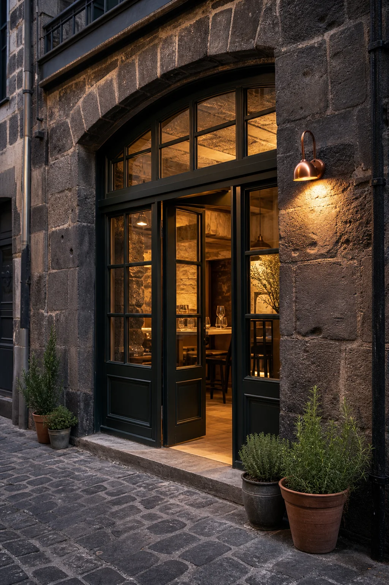
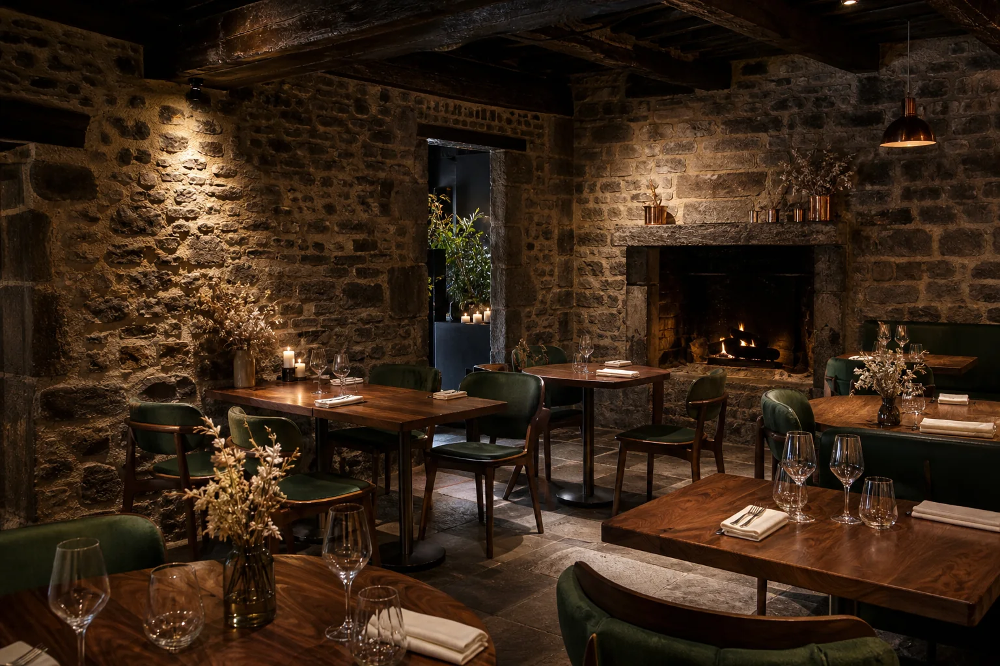
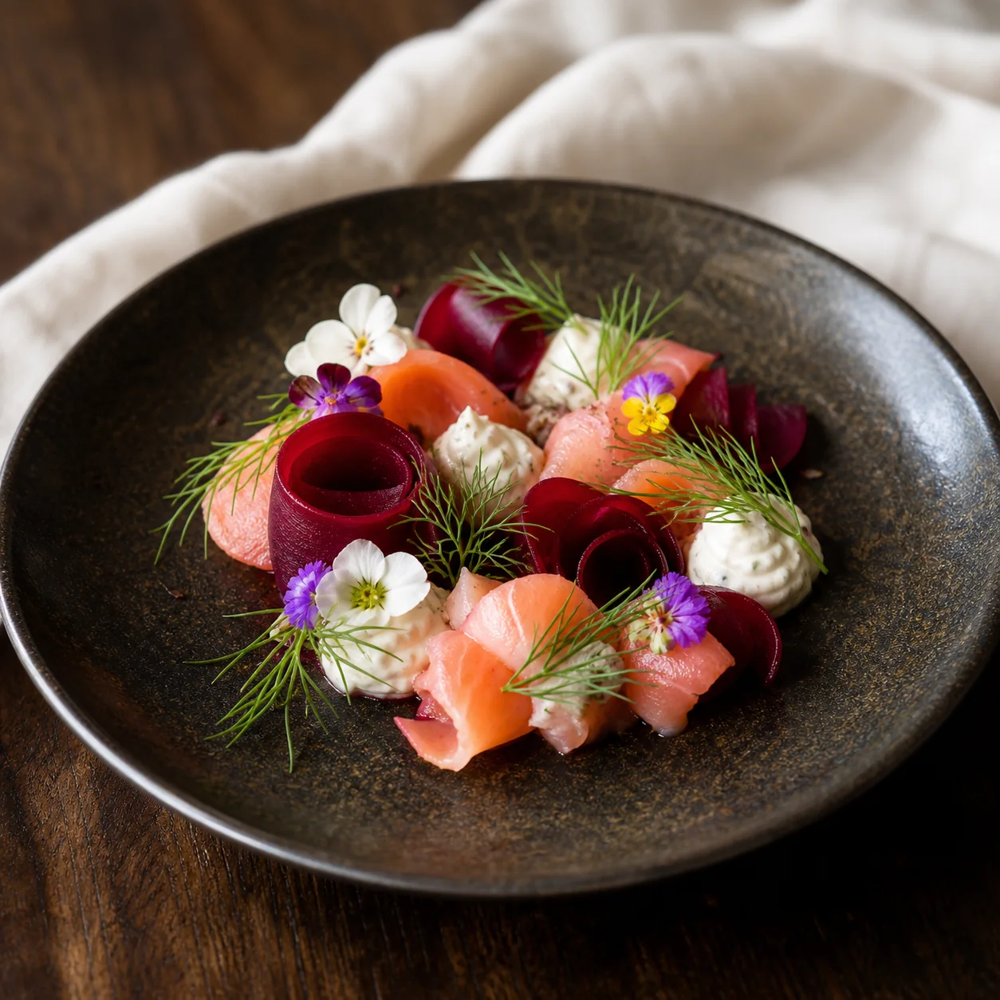
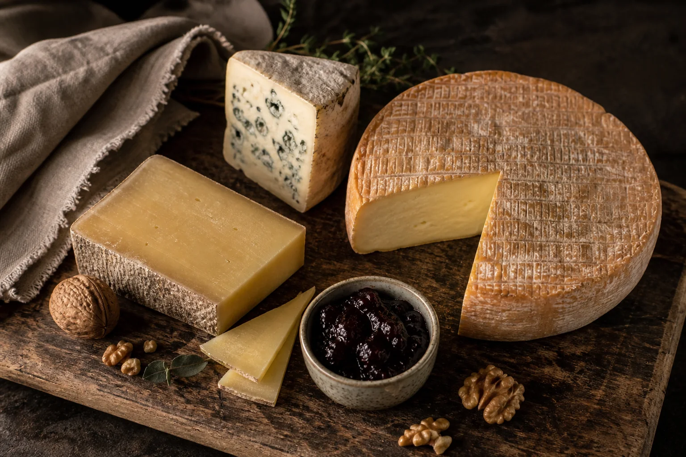
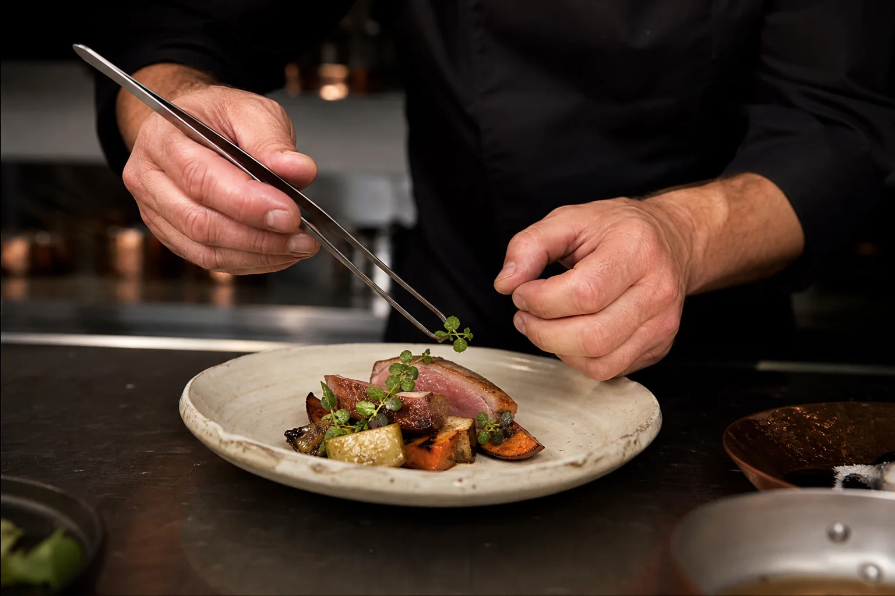

Au rythme des saisons
Une carte vivante qui évolue au fil de la nature.
Démonstration de site vitrine
Une cuisine bistronomique de saison, façonnée par les producteurs et les paysages d’Auvergne.


Dans un ancien atelier de pierre imaginé au cœur de Clermont-Ferrand, L’Atelier des Volcans fait dialoguer le geste du cuisinier et la générosité du territoire.
Notre cuisine suit le rythme des saisons. Elle met à l’honneur les légumes des maraîchers voisins, les fromages de nos montagnes et les viandes choisies auprès d’éleveurs engagés.
Ici, l’assiette est précise, l’accueil est simple et la soirée prend le temps de vivre.
Une carte vivante qui évolue au fil de la nature.
Des producteurs locaux choisis avec exigence.
Un accueil chaleureux, attentif et sans artifices.
Des assiettes de saison, une salle vivante et le goût du détail.




Avis fictifs présentés à titre d’exemple.
« Une cuisine sincère et délicate, qui raconte le terroir avec justesse. Chaque assiette réserve une belle surprise. »
« Une atmosphère chaleureuse, un service attentif et des plats d’une grande finesse. Une soirée mémorable. »
« Des produits remarquables, des associations surprenantes et un équilibre parfait des saveurs. Nous reviendrons. »
12 rue des Roches
63000 Clermont-Ferrand (adresse fictive)
04 73 00 00 00 (numéro fictif)
Mardi — Samedi
12h–14h · 19h–22h
Dimanche — Lundi
Fermé